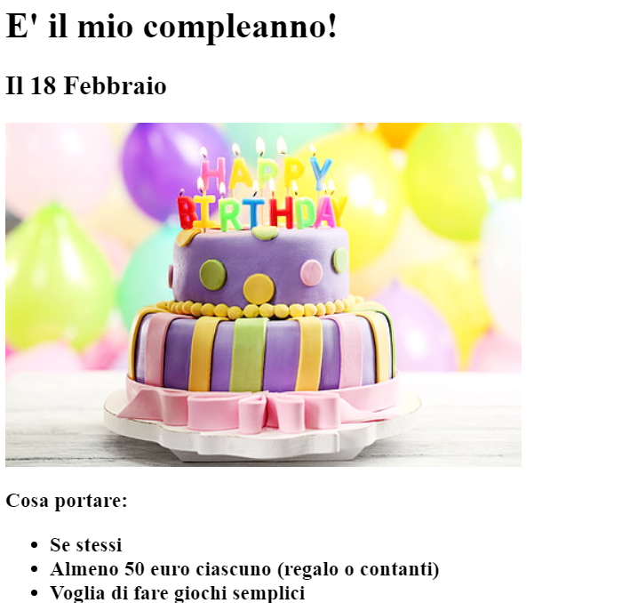
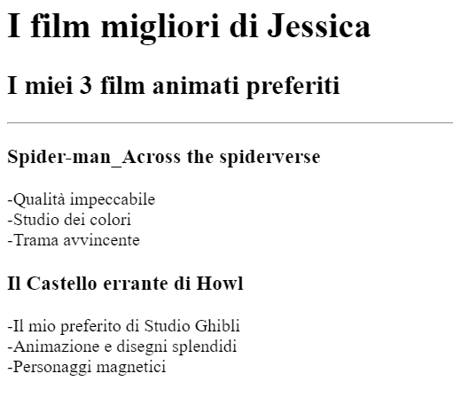

<!-- TODO 1: Create the HTML Boilerplate -->

<!DOCTYPE html>
<html lang="en">
<head>
    <meta charset="UTF-8">
    <meta name="viewport" content="width=device-width, initial-scale=1.0">
    <title>CTRLALTCANT portfolio</title>
</head>
<body>
    
</body>
</html>

<h1>CTRLALTCANT</h1>
<h2>I'm (trying to be) a friendly web developer</h2>
<hr />
<!-- TODO 2: Add Your previous projects' HTML into the public folder -->

<a href="./public/birthday-invite.html"><h2>THE CAKE IS A LIE</h2></a>

<!-- TODO 3: Take screenshots of your project previews and add the images to the images folder -->



<a href="./public/movie-ranking.html"><h2>La mia critica personale</h2></a>


<hr />
<hr />
Wanna chat? Contact me <a href="./public/contact.html">HERE</a><br />
<a href="./public/about.html">They say about me</a> 
<!-- TODO 4: Add titles/subtitles etc. -->

<!-- TODO 5: Add a link to the project pages -->

<!-- TODO 6: Add images to show the project previews
HINT for TODO 6: You can use the height attribute set to 200 to make the image smaller:
https://developer.mozilla.org/en-US/docs/Web/HTML/Element/img#attr-height -->

<!-- TODO 7: Add the Contact Me and About Me page links -->